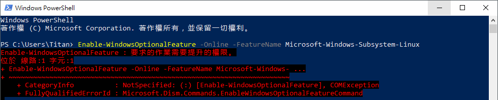
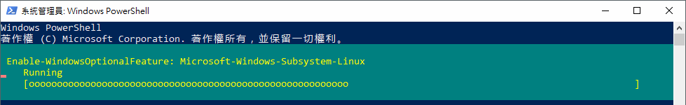
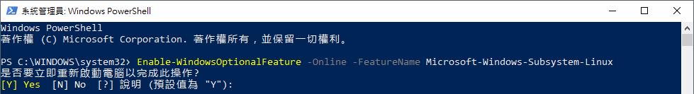
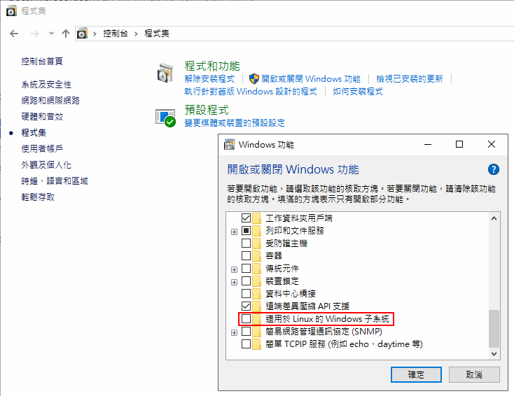
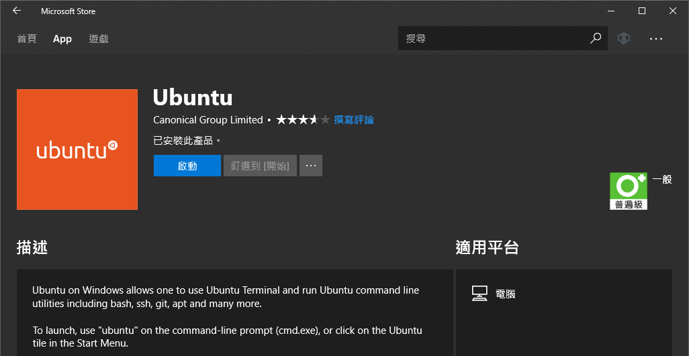
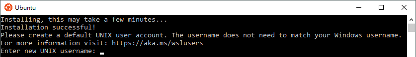
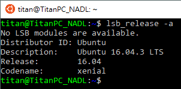
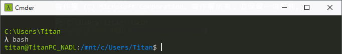

<!DOCTYPE html>
<html>
<head><meta name="generator" content="Hexo 3.8.0">
  <meta charset="utf-8">
  <meta http-equiv="X-UA-Compatible" content="IE=edge">
  
  <title>Windows Subsystem for Linux (WSL) | Titangene Blog</title>
  <meta name="description" content="利用 blog 紀錄學習歷程">
  <meta name="keywords" content="">
  <meta name="HandheldFriendly" content="True">
  <meta name="apple-mobile-web-app-capable" content="yes">
  <link rel="shortcut icon" href="/favicon.ico">
  <link rel="alternate" href="/atom.xml" title="Titangene Blog">
  <meta name="viewport" content="width=device-width, initial-scale=1, maximum-scale=1">
  <meta name="description" content="Windows Subsystem for Linux (簡稱 WSL)，由 Microsoft 與 Canonical 公司合作開發，可直接在 Windows 10 中建立一個 Linux 子系統，原生執行 Linux，還可自行選擇你想安裝的 Linux 發行版，例如：Ubuntu、Kali Linux、SUSE。那下面就來介紹如何安裝和使用。">
<meta name="keywords" content="WSL,Ubuntu,Windows 10">
<meta property="og:type" content="article">
<meta property="og:title" content="Windows Subsystem for Linux (WSL)">
<meta property="og:url" content="https://titangene.github.io/article/windows-subsystem-for-linux.html">
<meta property="og:site_name" content="Titangene Blog">
<meta property="og:description" content="Windows Subsystem for Linux (簡稱 WSL)，由 Microsoft 與 Canonical 公司合作開發，可直接在 Windows 10 中建立一個 Linux 子系統，原生執行 Linux，還可自行選擇你想安裝的 Linux 發行版，例如：Ubuntu、Kali Linux、SUSE。那下面就來介紹如何安裝和使用。">
<meta property="og:locale" content="zh-tw">
<meta property="og:image" content="https://titangene.github.io/article/windows-subsystem-for-linux/2018-11-17-19-04-25.png">
<meta property="og:image" content="https://titangene.github.io/article/windows-subsystem-for-linux/2018-11-17-19-04-37.png">
<meta property="og:image" content="https://titangene.github.io/article/windows-subsystem-for-linux/2018-11-17-19-04-47.png">
<meta property="og:image" content="https://titangene.github.io/article/windows-subsystem-for-linux/2018-11-17-19-05-10.png">
<meta property="og:image" content="https://titangene.github.io/article/windows-subsystem-for-linux/2018-11-17-19-05-23.png">
<meta property="og:image" content="https://titangene.github.io/article/windows-subsystem-for-linux/2018-11-17-19-05-41.png">
<meta property="og:image" content="https://titangene.github.io/article/windows-subsystem-for-linux/2018-11-17-19-06-06.png">
<meta property="og:image" content="https://titangene.github.io/article/windows-subsystem-for-linux/2018-11-17-19-06-17.png">
<meta property="og:image" content="https://titangene.github.io/article/windows-subsystem-for-linux/2018-11-17-19-06-28.png">
<meta property="og:image" content="https://titangene.github.io/article/windows-subsystem-for-linux/2018-11-17-19-06-42.png">
<meta property="og:image" content="https://titangene.github.io/article/windows-subsystem-for-linux/2018-11-17-19-06-53.png">
<meta property="og:image" content="https://titangene.github.io/article/windows-subsystem-for-linux/2018-11-17-19-07-01.png">
<meta property="og:image" content="https://titangene.github.io/article/windows-subsystem-for-linux/2018-11-17-19-07-14.png">
<meta property="og:updated_time" content="2018-11-17T11:51:45.972Z">
<meta name="twitter:card" content="summary">
<meta name="twitter:title" content="Windows Subsystem for Linux (WSL)">
<meta name="twitter:description" content="Windows Subsystem for Linux (簡稱 WSL)，由 Microsoft 與 Canonical 公司合作開發，可直接在 Windows 10 中建立一個 Linux 子系統，原生執行 Linux，還可自行選擇你想安裝的 Linux 發行版，例如：Ubuntu、Kali Linux、SUSE。那下面就來介紹如何安裝和使用。">
<meta name="twitter:image" content="https://titangene.github.io/article/windows-subsystem-for-linux/2018-11-17-19-04-25.png">
    
  <link href="https://fonts.googleapis.com/css?family=Inconsolata|Titillium+Web" rel="stylesheet">
  <link href="https://fonts.googleapis.com/css?family=Roboto+Mono" rel="stylesheet">
  <link href="//cdn.bootcss.com/node-waves/0.7.5/waves.min.css" rel="stylesheet">
  <link rel="stylesheet" href="/style.css">
  <script>
    function setLoadingBarProgress(num) {
      document.getElementById('loading-bar').style.width=num+"%";
    }
  </script>
</head>
</html>
<body>
  <div id="loading-bar-wrapper">
  <div id="loading-bar"></div>
</div>


  <script>setLoadingBarProgress(20)</script> 
  <header class="l_header">
	<div class="wrapper">
		<div class="nav-main container container--flex">
			<a class="logo flat-box" href="/">
				Titangene Blog
			</a>
			<div class="menu">
				<ul class="h-list">
					
						<li>
							<a class="flat-box nav-home" href="/">
								Home
							</a>
						</li>
					
						<li>
							<a class="flat-box nav-archives" href="/archives">
								Archives
							</a>
						</li>
					
				</ul>
				<div class="underline"></div>
			</div>
			
				<div class="m_search">
					<form name="searchform" class="form u-search-form">
						<input type="text" class="input u-search-input" placeholder="Search">
						<span class="icon icon-search"></span>
					</form>
				</div>
			
			<ul class="switcher h-list">
				
					<li class="s-search"><a href="javascript:void(0)"><span class="icon icon-search flat-box"></span></a></li>
				
				<li class="s-menu"><a href="javascript:void(0)"><span class="icon icon-menu flat-box"></span></a></li>
			</ul>
		</div>
		
		<div class="nav-sub container container--flex">
			<a class="logo" href="javascript:void(0)">
				Word of Forks
			</a>

			<ul class="switcher h-list">
				<li class="s-comment"><a href="javascript:void(0)"><span class="icon icon-chat_bubble_outline flat-box"></span></a></li>
				<li class="s-top"><a href="javascript:void(0)"><span class="icon icon-arrow_upward flat-box"></span></a></li>
				<li class="s-toc"><a href="javascript:void(0)"><span class="icon icon-format_list_numbered flat-box"></span></a></li>
			</ul>
		</div>
	</div>
</header>
<aside class="menu-phone">
	<nav>
		
			<a href="/" class="nav-home nav">
				Home
			</a>
		
			<a href="/archives" class="nav-archives nav">
				Archives
			</a>
		
	</nav>
</aside>

    <script>setLoadingBarProgress(40);</script>
  <div class="l_body">
    <div class='container clearfix'>
      <div class='l_main'>
        <article id="post-windows-subsystem-for-linux" class="post white-box article-type-post" itemscope="" itemprop="blogPost">
	<section class="meta">
	<h2 class="title">
  	<a href="/article/windows-subsystem-for-linux.html">
    	Windows Subsystem for Linux (WSL)
    </a>
  </h2>
	<time>
	  2018-11-17
	</time>
	
    
    <div class="cats">
        <a href="/categories/windows/">Windows</a>, <a href="/categories/windows/linux/">Linux</a>
    </div>

	</section>
	
		<section class="toc-wrapper"><ol class="toc"><li class="toc-item toc-level-2"><a class="toc-link" href="#啟用-Windows-Subsystem-for-Linux"><span class="toc-number">1.</span> <span class="toc-text">啟用 Windows Subsystem for Linux</span></a></li><li class="toc-item toc-level-2"><a class="toc-link" href="#安裝-Linux-發行版"><span class="toc-number">2.</span> <span class="toc-text">安裝 Linux 發行版</span></a></li><li class="toc-item toc-level-2"><a class="toc-link" href="#在其他終端使用-Bash"><span class="toc-number">3.</span> <span class="toc-text">在其他終端使用 Bash</span></a></li><li class="toc-item toc-level-2"><a class="toc-link" href="#存取目錄"><span class="toc-number">4.</span> <span class="toc-text">存取目錄</span></a></li><li class="toc-item toc-level-2"><a class="toc-link" href="#小結"><span class="toc-number">5.</span> <span class="toc-text">小結</span></a></li><li class="toc-item toc-level-2"><a class="toc-link" href="#參考連結"><span class="toc-number">6.</span> <span class="toc-text">參考連結</span></a></li></ol></section>
	
	<section class="article typo">
  	<div class="article-entry" itemprop="articleBody">
    	<p>Windows Subsystem for Linux (簡稱 WSL)，由 Microsoft 與 Canonical 公司合作開發，可直接在 Windows 10 中建立一個 Linux 子系統，原生執行 Linux，還可自行選擇你想安裝的 Linux 發行版，例如：Ubuntu、Kali Linux、SUSE。那下面就來介紹如何安裝和使用。</p>
<a id="more"></a>
<h2 id="啟用-Windows-Subsystem-for-Linux"><a href="#啟用-Windows-Subsystem-for-Linux" class="headerlink" title="啟用 Windows Subsystem for Linux"></a>啟用 Windows Subsystem for Linux</h2><p>使用系統管理者權限開啟 PowerShell，並執行下面命令啟用 <code>Windows Subsystem for Linux</code> 功能：</p>
<pre><code class="shell">$ Enable-WindowsOptionalFeature -Online -FeatureName Microsoft-Windows-Subsystem-Linux
</code></pre>
<p>如果顯示下面訊息就代表你沒有使用系統管理員開啟 PowerShell：</p>
<pre><code class="shell">Enable-WindowsOptionalFeature : 要求的作業需要提升的權限。
位於 線路:1 字元:1
+ Enable-WindowsOptionalFeature -Online -FeatureName Microsoft-Windows- ...
+ ~~~~~~~~~~~~~~~~~~~~~~~~~~~~~~~~~~~~~~~~~~~~~~~~~~~~~~~~~~~~~~~~~~~~~
    + CategoryInfo          : NotSpecified: (:) [Enable-WindowsOptionalFeature], COMException
    + FullyQualifiedErrorId : Microsoft.Dism.Commands.EnableWindowsOptionalFeatureCommand
</code></pre>
<p></p>
<p>接著等他跑一下…：</p>
<p></p>
<p>接著他會問是否要重啟電腦，因為預設是 Yes，所以可以直接按 <code>Enter</code>：</p>
<p></p>
<p>其實上面指令就等於去「控制台 &gt; 程式集 &gt; 開啟或關閉 Windows 功能」開啟「適用於 Linux 的 Windows 子系統」。</p>
<p></p>
<h2 id="安裝-Linux-發行版"><a href="#安裝-Linux-發行版" class="headerlink" title="安裝 Linux 發行版"></a>安裝 Linux 發行版</h2><p>系統組建 (build) 必須要 Windows build 16215 或更新版本。若要想知道系統組建，可至 Windows 的「設定」內的「關於」即可查看。</p>
<p></p>
<p>你可以選擇你想安裝的 Linux 發行版：</p>
<ul>
<li><a href="https://www.microsoft.com/zh-tw/p/ubuntu-1604-lts/9pjn388hp8c9" target="_blank" rel="noopener">Ubuntu 16.04 LTS</a></li>
<li><a href="https://www.microsoft.com/zh-tw/p/ubuntu-1804-lts/9n9tngvndl3q" target="_blank" rel="noopener">Ubuntu 18.04 LTS</a></li>
<li><a href="https://www.microsoft.com/zh-tw/p/debian-gnu-linux/9msvkqc78pk6" target="_blank" rel="noopener">Debian GNU/Linux</a></li>
<li><a href="https://www.microsoft.com/zh-tw/p/opensuse-leap-42/9njvjts82tjx" target="_blank" rel="noopener">OpenSUSE Leap 42</a></li>
<li><a href="https://www.microsoft.com/zh-tw/p/suse-linux-enterprise-server-12/9p32mwbh6cns" target="_blank" rel="noopener">SUSE Linux Enterprise Server 12</a></li>
<li><a href="https://blogs.msdn.microsoft.com/commandline/2018/03/05/kali-linux-for-wsl/" target="_blank" rel="noopener">Kali Linux</a></li>
</ul>
<p></p>
<p>如果在安裝後直接開啟 Ubuntu，就會顯示 <code>Error: 0x8007007e</code> 錯誤就代表你沒有啟用 <code>Windows Subsystem for Linux</code> 功能，詳情請參考上面：</p>
<pre><code class="shell">The WSL optional component is not enabled. Please enable it and try again.
See https://aka.ms/wslinstall for details.
Error: 0x8007007e
Press any key to continue...
</code></pre>
<p>安裝後啟動 Linux 發行版，此時會開啟一個 console 視窗。因為是第一次開啟，所以會先安裝 WSL，等它安裝完後，就會看到下面畫面，系統要你建立一個新的 Unix 使用者名稱：</p>
<pre><code class="shell">Installing, this may take a few minutes...
Installation successful!
Please create a default UNIX user account. The username does not need to match your Windows username.
For more information visit: https://aka.ms/wslusers
Enter new UNIX username:
</code></pre>
<p></p>
<p>接著是設定此使用者的密碼，這邊的使用者與你的 Windows 使用者名稱和密碼沒有任何關係。詳情可參考官方的 <a href="https://docs.microsoft.com/zh-tw/windows/wsl/user-support" target="_blank" rel="noopener">Linux User Account and Permissions | Microsoft Docs</a> 文件。</p>
<p>如果顯示 <code>$</code> 就代表設定完成囉！</p>
<p></p>
<p>執行 <code>lsb_release -a</code> 指令就會看到 Linux 的系統版本：</p>
<p></p>
<h2 id="在其他終端使用-Bash"><a href="#在其他終端使用-Bash" class="headerlink" title="在其他終端使用 Bash"></a>在其他終端使用 Bash</h2><p>如果在使用 CMD 、 PowerShell 或其他終端 (例如我常用的 Cmder) 時想用 bash shell，可使用 <code>bash</code> 指令就可以啟動新的 Ubuntu shell：</p>
<pre><code class="shell">$ bash
</code></pre>
<p></p>
<p></p>
<p></p>
<h2 id="存取目錄"><a href="#存取目錄" class="headerlink" title="存取目錄"></a>存取目錄</h2><p>如果想存取 <code>D:\project</code>，在此環境下的路徑就是 <code>/mnt/d/project</code>。</p>
<p></p>
<h2 id="小結"><a href="#小結" class="headerlink" title="小結"></a>小結</h2><p>如果有在跨平台開發或維運的朋友，這個功能應該是一直以來的願望吧？讓你在 Windows 上可以直接處理事情，不用再多開 VM 來使用，不只省資源，也省硬碟空間，重點是不用等 VM 開機…</p>
<h2 id="參考連結"><a href="#參考連結" class="headerlink" title="參考連結"></a>參考連結</h2><ul>
<li><a href="https://docs.microsoft.com/zh-tw/windows/wsl/install-win10" target="_blank" rel="noopener">Install the Linux Subsystem on Windows 10 | Microsoft Docs</a></li>
<li><a href="https://blogs.msdn.microsoft.com/microsoft_student_partners_in_taiwan/2017/10/03/wsltune/" target="_blank" rel="noopener">【WSL】Windows Subsystem for Linux 安裝及基本配置！ | 台灣微軟學生大使</a></li>
<li><a href="https://kheresy.wordpress.com/2016/04/12/bash-on-ubuntu-on-windows/" target="_blank" rel="noopener">Bash on Ubuntu on Windows 的簡單使用 | Heresy’s Space</a></li>
</ul>

  	</div>
	  
	  <div class="article-tags tags">
      
        <a href="/tags/wsl/">WSL</a>
      
        <a href="/tags/ubuntu/">Ubuntu</a>
      
        <a href="/tags/windows-10/">Windows 10</a>
      
	  </div>
    
		
	
		<div class="art-item-footer">
				
				
					<span class="art-item-right">next：<a href="/article/github-url-shortener.html" rel="next" title="GitHub 縮網址服務 Git.io">
						GitHub 縮網址服務 Git.io
					</a><i class="icon icon-chevron-thin-right"></i></span>
				
		</div>
	
	</section>
	
		<section id="comments">
			<div id="disqus_thread"></div>
		</section>
	
</article>
<script>
	window.subData = {
		title: 'Windows Subsystem for Linux (WSL)',
		tools: true
	}
</script>

      </div>
      <aside class='l_side'>
        
  <section class="m_widget about">
  
  
  
  <div class="header">Titangene</div>
  <div class="content">
      <div class="desc">利用 blog 紀錄學習歷程</div>
  </div>
  <div class="content">
      <meta itemprop="url" content="https://titangene.github.io">
      
      <div class="social-wrapper">
      
          <a itemprop="sameAs" href="https://github.com/titangene" class="social github" target="_blank" rel="external">
              <span class="icon icon-github"></span>
          </a>
      
          <a itemprop="sameAs" href="https://www.facebook.com/titangene.tw" class="social facebook" target="_blank" rel="external">
              <span class="icon icon-facebook"></span>
          </a>
      
          <a itemprop="sameAs" href="/atom.xml" class="social rss" target="_blank" rel="external">
              <span class="icon icon-rss"></span>
          </a>
      
      </div>
      
  </div>
</section>

  
<section class="m_widget">
    <div class="fb-page" data-href="https://www.facebook.com/titangene.blog/" data-tabs="timeline" data-width="250" data-small-header="false" data-adapt-container-width="true" data-hide-cover="false" data-show-facepile="true">
        <blockquote cite="https://www.facebook.com/titangene.blog/" class="fb-xfbml-parse-ignore">
            <a href="https://www.facebook.com/titangene.blog/">Titangene Blog</a>
        </blockquote>
    </div>
</section>


  
<section class="m_widget recent">
    <div class="header">Recents</div>
    <div class="content">
        
        <ul class="entry">
        
            <li>
                <a itemprop="url" class="flat-box" href="/article/windows-subsystem-for-linux.html">
                    <time>2018-11-17</time>
                    <div class="name">Windows Subsystem for Linux (WSL)</div>
                </a>
            </li>
        
            <li>
                <a itemprop="url" class="flat-box" href="/article/github-url-shortener.html">
                    <time>2018-11-01</time>
                    <div class="name">GitHub 縮網址服務 Git.io</div>
                </a>
            </li>
        
            <li>
                <a itemprop="url" class="flat-box" href="/article/flutter-custom-fonts.html">
                    <time>2018-10-29</time>
                    <div class="name">Flutter 自訂字型</div>
                </a>
            </li>
        
            <li>
                <a itemprop="url" class="flat-box" href="/article/flutter-install-on-windows.html">
                    <time>2018-10-23</time>
                    <div class="name">Flutter 環境建置 (Windows)</div>
                </a>
            </li>
        
            <li>
                <a itemprop="url" class="flat-box" href="/article/hexo-disqus.html">
                    <time>2018-10-22</time>
                    <div class="name">Hexo 加入 Disqus 討論區</div>
                </a>
            </li>
        
        </ul>
        
    </div>
</section>

      </aside>
      <script>setLoadingBarProgress(60);</script>
    </div>
  </div>
  <footer id="footer" class="clearfix">
	<div class="social-wrapper">
  	
      
        <a href="https://github.com/titangene" class="social github" target="_blank" rel="external">
          <span class="icon icon-github"></span>
        </a>
      
        <a href="https://www.facebook.com/titangene.tw" class="social facebook" target="_blank" rel="external">
          <span class="icon icon-facebook"></span>
        </a>
      
        <a href="/atom.xml" class="social rss" target="_blank" rel="external">
          <span class="icon icon-rss"></span>
        </a>
      
    
  </div>
  <div>
    © 2018 <span itemprop="copyrightHolder">Titangene</span>
  </div>
  <div>
    Powered by <a href="https://hexo.io/" class="codename">Hexo</a> - 
    Theme <a href="https://github.com/stkevintan/hexo-theme-material-flow" class="codename">MaterialFlow</a>
  </div>
</footer>


  <script>setLoadingBarProgress(80);</script>
  
<script>
  var disqus_shortname = 'titangene-blog';
  
  var disqus_url = 'https://titangene.github.io/article/windows-subsystem-for-linux.html';
  
  (function(){
    var dsq = document.createElement('script');
    dsq.type = 'text/javascript';
    dsq.async = true;
    dsq.src = '//' + disqus_shortname + '.disqus.com/embed.js';
    (document.getElementsByTagName('head')[0] || document.getElementsByTagName('body')[0]).appendChild(dsq);
  })();
</script>


<script src="//apps.bdimg.com/libs/jquery/2.1.4/jquery.min.js"></script>
<script src="//cdn.bootcss.com/node-waves/0.7.5/waves.min.js"></script>
<script src="//cdn.bootcss.com/scrollReveal.js/3.3.2/scrollreveal.min.js"></script>
<script src="/js/jquery.fitvids.js"></script>
<script>
	var GOOGLE_CUSTOM_SEARCH_API_KEY = "";
	var GOOGLE_CUSTOM_SEARCH_ENGINE_ID = "";
	var ALGOLIA_API_KEY = "";
	var ALGOLIA_APP_ID = "";
	var ALGOLIA_INDEX_NAME = "";
  var AZURE_SERVICE_NAME = "";
  var AZURE_INDEX_NAME = "";
  var AZURE_QUERY_KEY = "";
  var BAIDU_API_ID = "";
  var SEARCH_SERVICE = "hexo";
  var ROOT = "/"||"/";
  if(!ROOT.endsWith('/'))ROOT += '/';
</script>
<script src="/js/search.js"></script>
<script src="/js/app.js"></script>


  
<div id="fb-root"></div>
<script>
  window.fbAsyncInit = function() {
    FB.init({
      appId            : "",
      autoLogAppEvents : true,
      xfbml            : true,
      version          : "v2.11"
    });
  };
  (function(d, s, id){
      var js, fjs = d.getElementsByTagName(s)[0];
      if (d.getElementById(id)) {return;}
      js = d.createElement(s); js.id = id;
      js.src = "//connect.facebook.net/zh_TW/sdk.js#xfbml=1&version=v2.11&appId=";
      fjs.parentNode.insertBefore(js, fjs);
    }(document, "script", "facebook-jssdk"));
</script>

  
<script src="https://cdnjs.cloudflare.com/ajax/libs/highlight.js/9.12.0/highlight.min.js"></script>
<script>
hljs.initHighlightingOnLoad();
</script>

  <script>setLoadingBarProgress(100);</script>
</body>
</html>
